get-microniches · no --features-csv
Contact, cycling, and pathways
Full Moran×η² β filter from the tonsil run TOML, then silhouette-optimized Leiden.
GC niches are scored for Tfh contact and proliferation; Tfh niches for GC contact and help programs.
GC B cells
Tfh
Command
spacetravlr get-microniches \
--run-toml …/spacetravlr_run_repro.toml \
--cell-type B_germinal_center \ # or T_follicular_helper
--corr-max 0.95 \ # GC; Tfh used 0.90
--out ./microniches
No --features-csv. Spatial filter ranks βs by Moran×η², FDR on the top 4,000, then decorrelates.
GC B cells
Cells 1,848
Niches 18
Kept βs 121
Tfh η² 0.276
Silhouette-chosen resolution 0.5 (silhouette ≈ 0.263). Tfh neighbor fraction varies strongly across niches (ANOVA p ≈ 10⁻¹¹⁵).
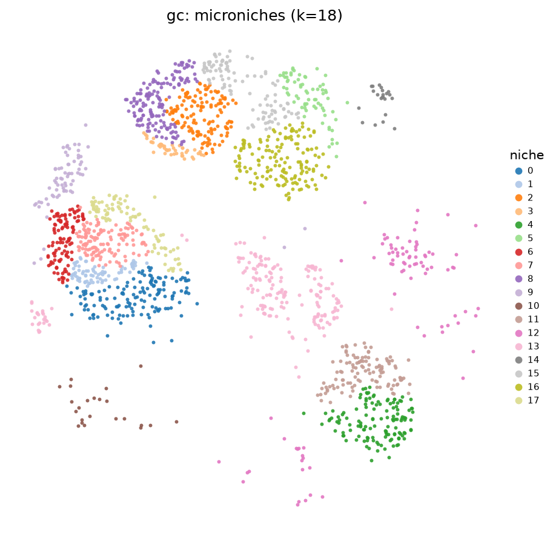
18 GC microniches from the full spatial β filter (no features-csv).
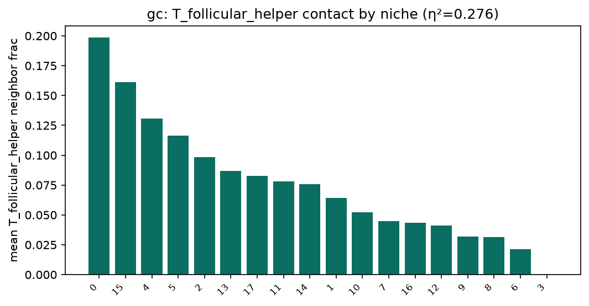
Niche 0 is the most Tfh-exposed (~20% of spatial neighbors).
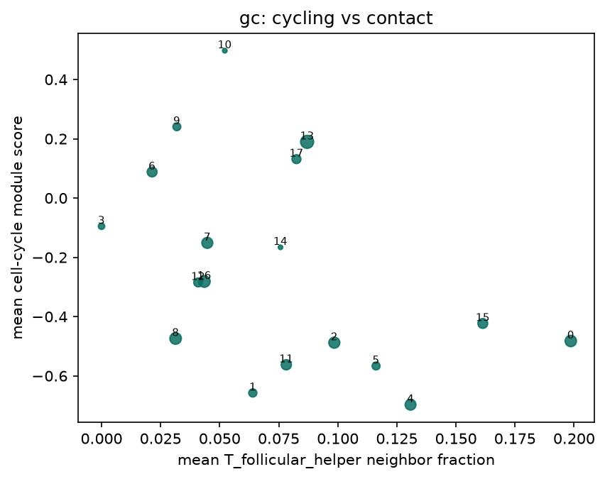
Cell-cycle module vs Tfh contact (niche means).
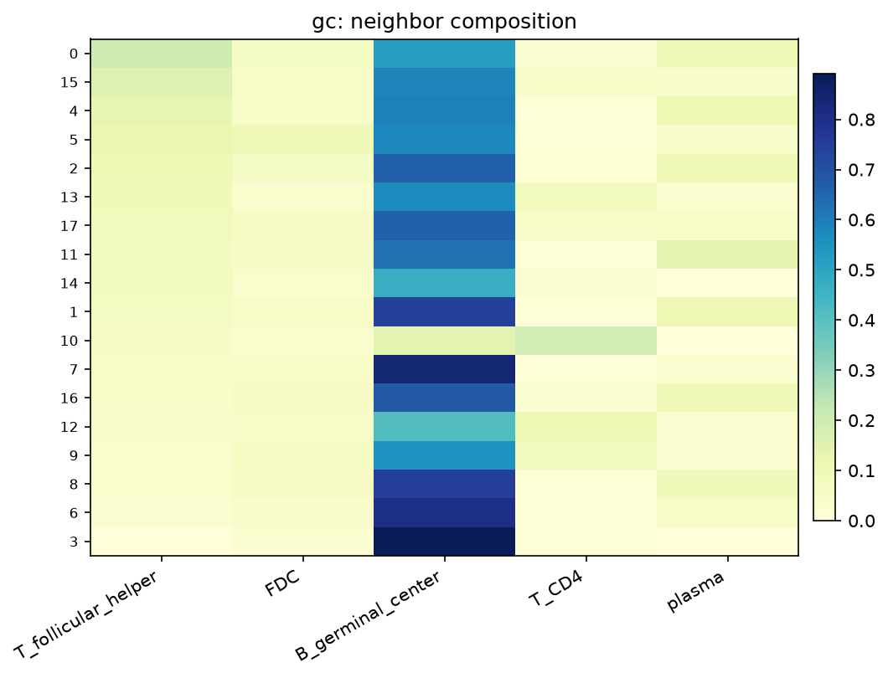
Neighbor composition ordered by Tfh contact.
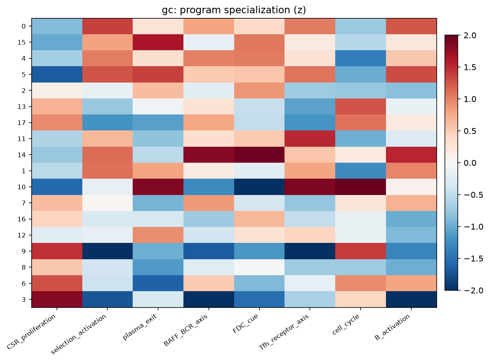
Independent GC programs (CSR/proliferation, selection, FDC cue, …) specialize across niches. CSR/proliferation η²≈0.088; cell_cycle η²≈0.054 (both Kruskal q≪0.001).
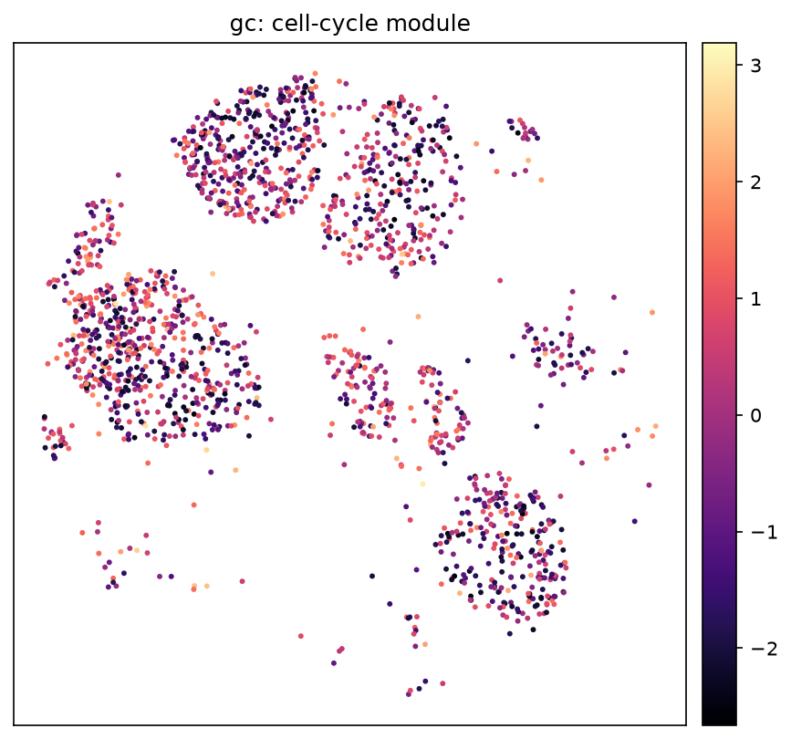
Cell-cycle module (TOP2A/HMGB2/CENPF/RRM2).
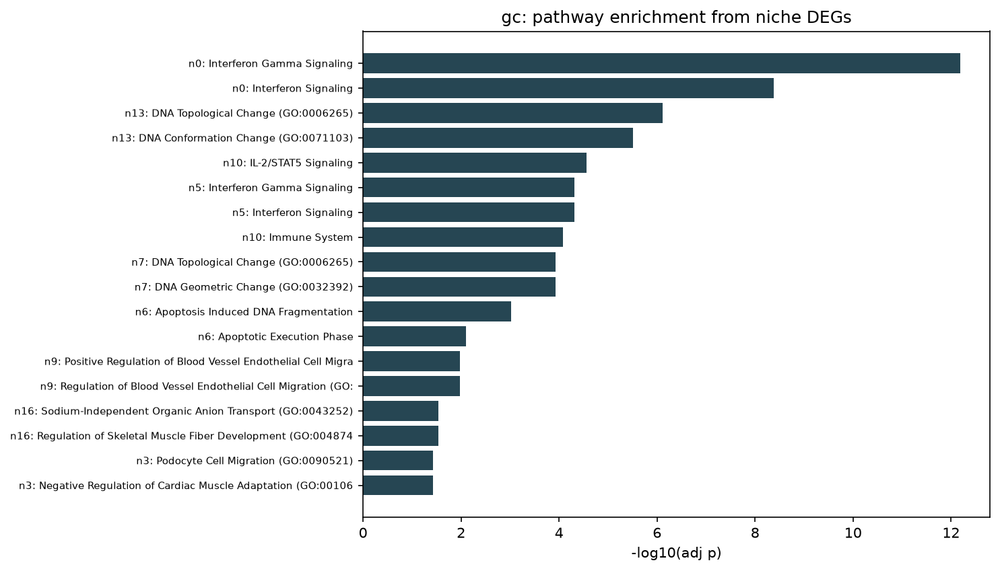
Enrichr on niche DEGs (GO BP, Reactome, Hallmark).
GC takeaways
Highest Tfh-contact niche (0) is enriched for interferon-γ / interferon signaling, PD-1 signaling, and antigen presentation — consistent with light-zone help/selection.Cycling niches (e.g. 10, 6, 17, 13) reach ~35–39% cells in the top cell-cycle quartile; niche 13 markers include TOP2A, HMGB2, CENPF.CSR/proliferation and cell-cycle modules are the strongest program associations with niche identity.
Niche Tfh contact Frac cycling n
0 0.199 — — 15 0.161 — — 10 — 0.391 23 6 — 0.385 109 13 — 0.363 190
T follicular helper
Cells 294
Niches 5
Kept βs 51
GC η² 0.084
Resolution 0.2 (silhouette ≈ 0.363). GC B neighbor fraction differs by niche (η²≈0.084, p≈4×10⁻⁵).
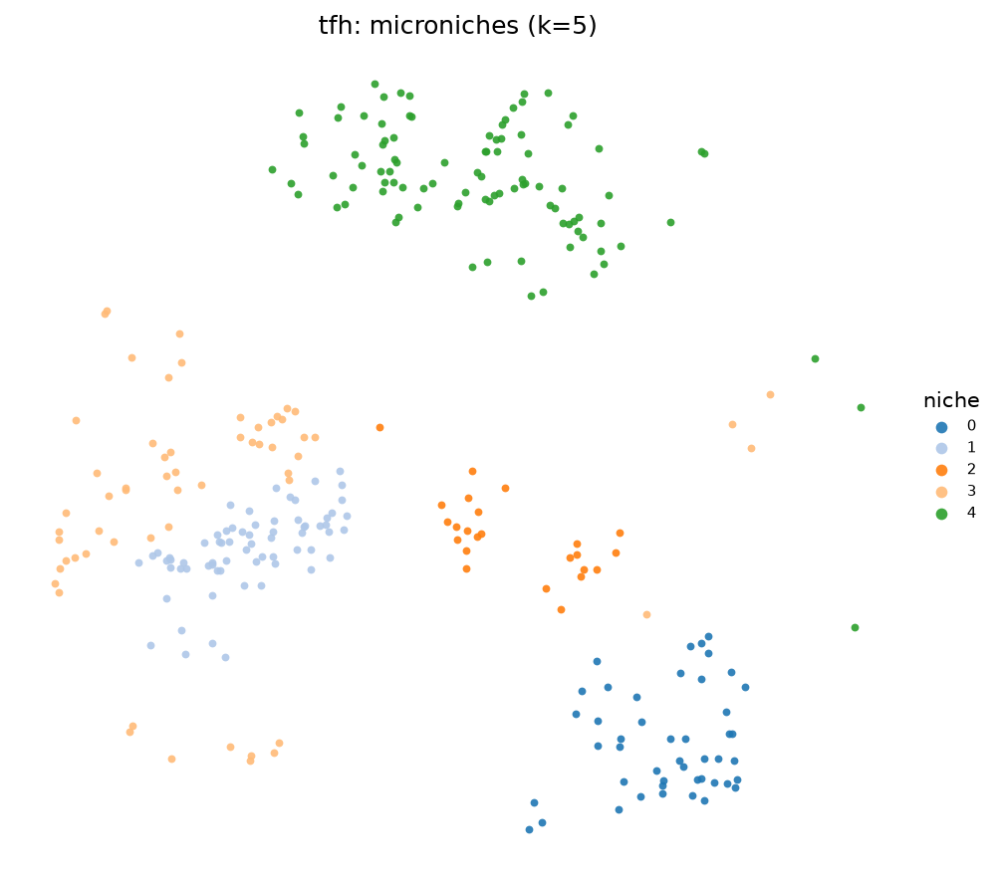
5 Tfh microniches from the same full-filter CLI (no features-csv).
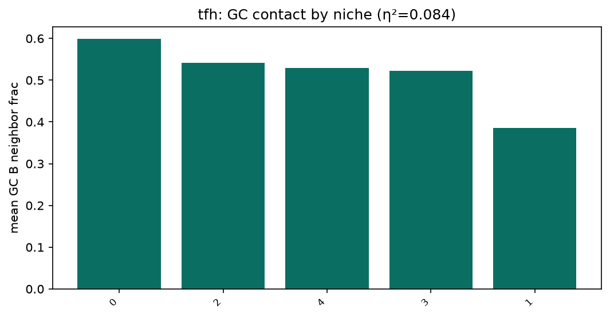
Niche 0 most GC-proximal (~60% GC neighbors); niche 1 lowest (~39%).
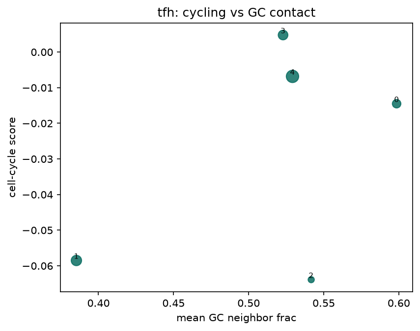
Cycling vs GC contact across Tfh niches.
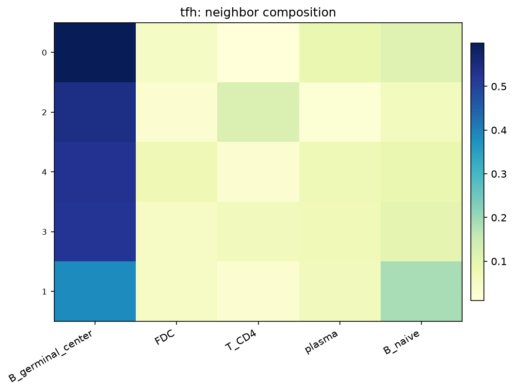
Neighbor composition ordered by GC contact.
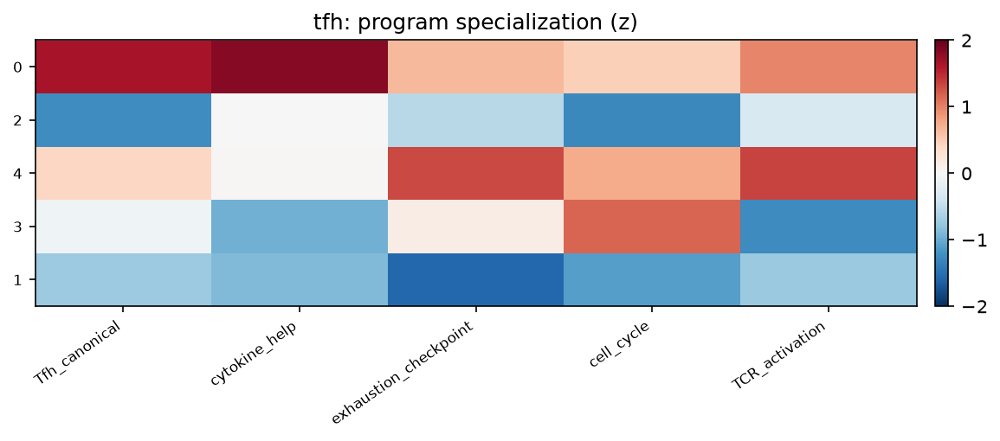
Tfh_canonical is the strongest program association (η²≈0.043).
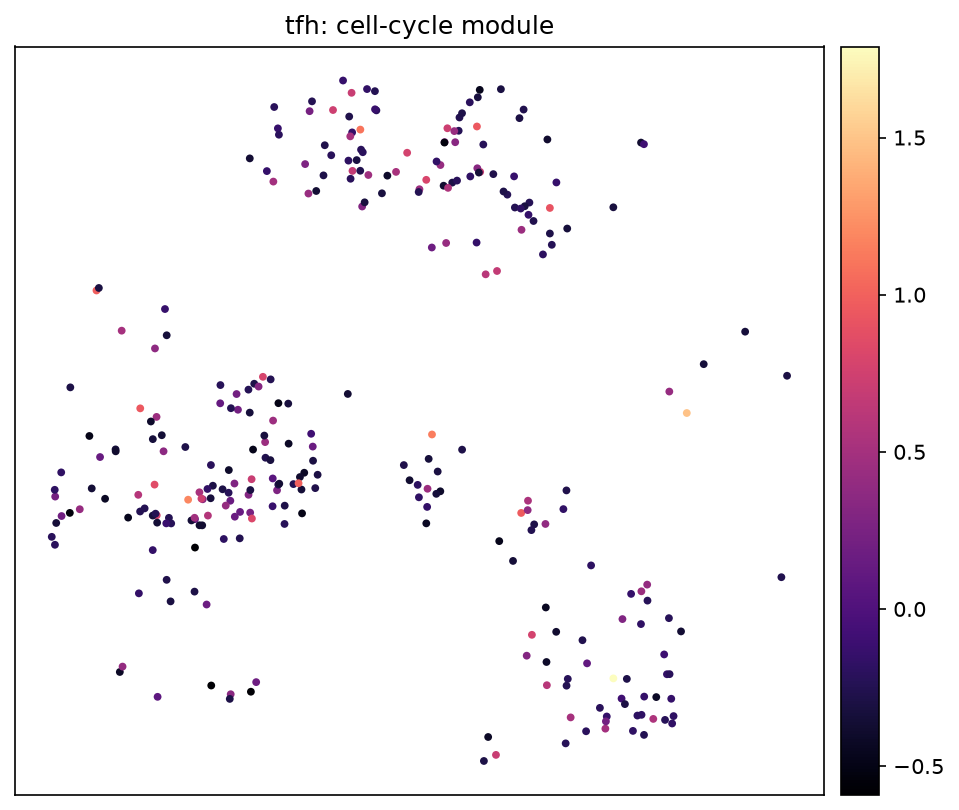
Cell-cycle module on Tfh cells.
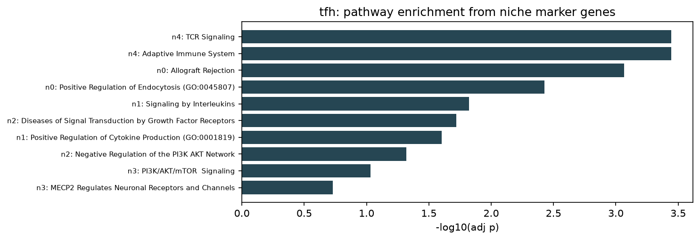
Pathways from top niche marker genes (score-ranked; small-n DE).
Tfh takeaways
Niche 4 (largest, n=97) is enriched for TCR signaling, PD-1 signaling, CD28 costimulation, and adaptive immunity — an activated/help-competent state.GC contact is highest in niches 0/2/4 (~53–60%) and lowest in niche 1 (~39%), separating follicle-proximal vs more peripheral Tfh.Cycling is modest overall; niche 3 has the highest cycling fraction (~29%).